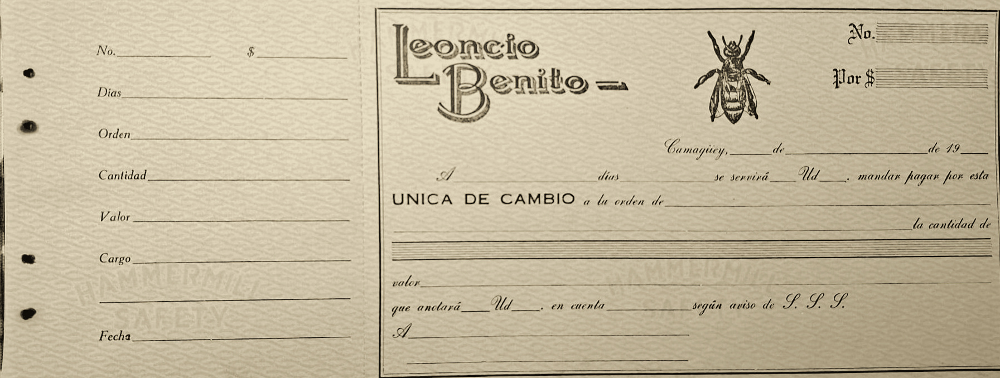
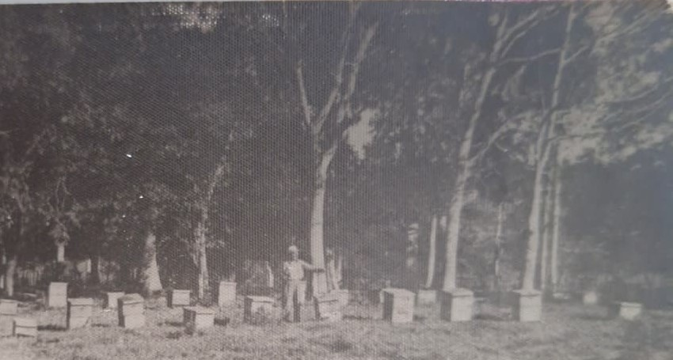
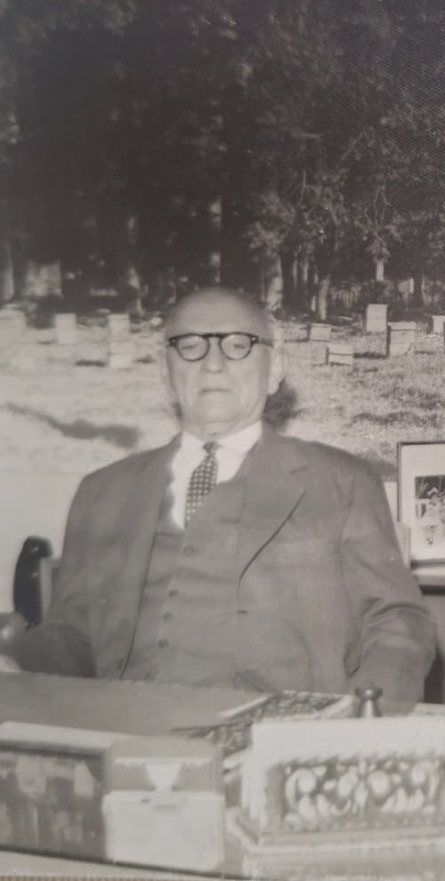

Exposición Mundial de Bruselas · 1958
Expo
1958
Leoncio Benito, cera y miel de abejas, representó la miel y la cera cubanas en Bruselas.
La firma en la Exposición
Miel y cera cubanas en Bruselas.
La miel y la cera cubana fue representada por la firma Leoncio Benito, cera y miel de abejas. El stand tuvo un póster gigante de la finca del señor Pacheco, apicultor en la provincia de Camagüey, Cuba, y productor de la empresa Leoncio Benito de los mencionados productos.
Los pagos de todos derechos se realizaron a través de las letras de cambio en USD de la prestigiosa firma comercial cubana internacional.

El fondo del stand
La finca del señor Pacheco.


El regreso a Cuba
Del stand al despacho de San Ramón 206.
Foto tomada a Don Leoncio Benito Rivas en su despacho de la empresa Leoncio Benito Cía., en la calle San Ramón 206, Camagüey, Cuba.
Se observa al fondo el póster que se trajo a Cuba desde Bruselas al concluir la Exposición Mundial 1958 y que sirvió de fondo al stand de los productos cubanos (miel y cera), a que se dedicaba la insigne marca Leoncio Benito cera y miel de abejas.
